RTR: Imperium Surrectum
RTR: Imperium SurrectumThe Polybian reforms
2026-07-01 · jottel

Hello everyone and welcome back to a new Developer Diary. Since last time we presented the Early Roman roster, it is time to talk about the first reform you will experience when playing the Romans: The Polybian reforms. The Roman army of Polybios' time is probably the best understood army system of the Roman Republic. Never before and never again do we get such a clear-cut explanation on how the Roman army is levied, organised and armed. In addition to that, it is from an outsider’s perspective, the Greek hostage turned pro-Roman (or rather pro-Scipio) historian Polybios of Megalopolis (ca. 200–120 BC), trying to explain this special system to his Greek readers in all the depth it deserves. At his time of writing, the 160s-150s BC presumably, the Roman army has crushed the hegemons of Greece and Asia, the Antigonids and Seleucids respectively, in several wars with minimal losses, reordered the political situation of the Eastern Mediterranean and have become the arbiters of Greek foreign politics. Polybios’ work is not just a chronological retelling of Rome’s rise to power, it is an analysis of the Roman state – and thus its army – and how this system led to Roman rule over basically most of the Mediterranean by the middle of the 2nd century BC. You will find countless Youtube videos and blog posts about Polybios’ explanation of the Roman army system, but rarely will you find it actually repeated and analysed in its exact wording, so this DD will be an opportunity for that: not just because it is interesting, but because you can essentially derive the explanation for our roster from it.
So let’s get started:
Polybios VI.21
[6] The tribunes [*χιλίαρχοι / chiliarchoi*] in Rome, after administering the oath, fix for each legion a day and place at which the men are to present themselves without arms and then dismiss them. [7] When they come to the rendezvous, they choose the youngest and poorest to form the grosphomachoi [*γροσφομάχους / grosphomachous*]; the next to them are made hastati [*ἁστάτους / hastatous*]; those in the prime of life principes [*πρίγκιπας / prinkipas*]; and the oldest of all triarii [*τριαρίους / triarious*], [8] these being the names among the Romans of the four classes in each legion distinct in age and equipment. [9] They divide them so that the senior men known as triarii [τριαρίους / triarious] number 600, the principes [*πρίγκιπας / prinkipas*] 1.200, the hastati [*ἁστάτους / hastatous*] 1.200, the rest, consisting of the youngest, being grosphomachoi [*γροσφοφόρους / grosphomachous*]. [10] If the legion consists of more than 4.000 men, they divide accordingly, except as regards the triarii [*τριαρίων / triarion*], the number of whom is always the same.
You can see here already that Polybios transliterates a lot of Roman terms for his Greek readers. Easily could he have translated “hastati” (derived from the hasta spear) as “dorymachoi” or the principes as “promachoi”. But we discussed the weirdness of the Roman terms in the last Dev Diary and obviously, the hastati aren’t spear-bearers anymore (only the triarii remain in that role) and the principes aren’t front-fighters. Polybios keeping the iconic names demonstrates their uniqueness in the militaries of the ancient Mediterranean. You will notice, however, that the velites are called “grosphomachoi”, translatable as “grosphos-fighters” – grosphos being essentially just the term for the hasta velitaris, and thus a direct translation as “velites” is unquestionably accepted. Let’s continue:
VI.22.
[1] The youngest soldiers [*νεωτάτοις / neotatois*] are ordered to carry a sword [*μάχαιραν / machairan*], light javelins [*γρόσφους / grosphous*], and a parma shield [*πάρμην / parmen*]. [2] The parma [*πάρμη / parmen*] is strongly made and sufficiently large to afford protection, being circular and measuring three feet in diameter. [3] They also wear a plain helmet [*λιτῷ περικεφαλαίῳ / lito perikephalaio*] and sometimes cover it with a wolf's skin [*λυκείαν / lykeian*] or something similar both to protect and to act as a distinguishing mark by which their officers [*ἡγεμόσι / hegemosi*] can recognize them and judge if they fight pluckily or not. [4] The wooden shaft of the javelin [*γρόσφων / grosphon*] measures about two cubits in length and is about a finger's breadth in thickness; its head is a span long hammered out to such a fine edge that it is necessarily bent by the first impact, and the enemy is unable to return it. If this were not so, the missile [*βέλος / belos*] would be available for both sides.
By Polybios’ time of writing, the velites have probably replaced what Livy (VIII.8) called the “leves” and “rorarii” (see the last Dev Diary). Polybios still refers to the light armed of the Romans in the first 5 books as “*akontistai*” – javelinmen, but the terminology shifts with this contemporary description of the Roman army. He will continue calling them “grosphomachoi” in all subsequent events of the 2nd Punic War and thereafter, coinciding with the velites reform at the battle of Capua 211 BC that Livy describes. Some of them wear wolf pelts to stand out in battle and draw attention of their superiors, the rest wear “plain helmets” though it’s up to interpretative freedom what this means; as is what other 'similar' decoration to wolf pelts he refers to. We went with helmets that don’t have the feather decorations of the heavy infantry.
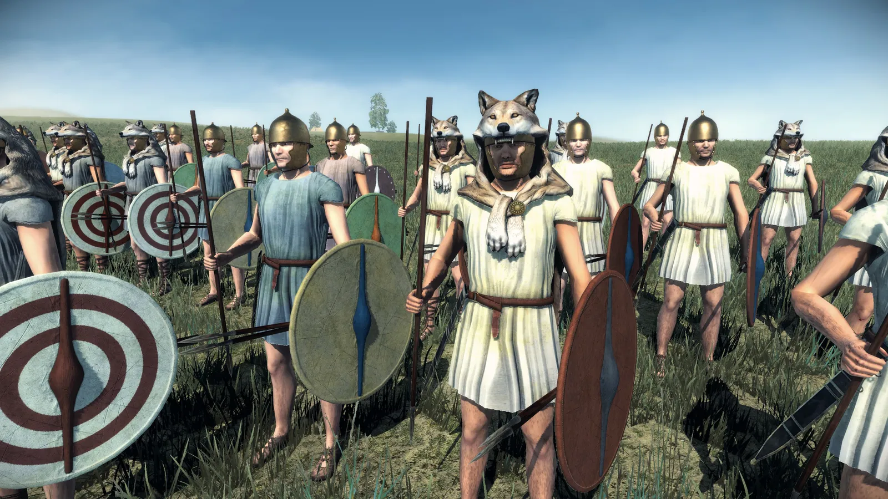
VI.23
[1] The next in seniority called hastati [*ἁστάτοις / hastatois*] are ordered to wear a complete panoply [*πανοπλίαν / panoplian*]. [2] The Roman panoply consists firstly of an oblong shield [*θυρεός / thureos*], the convex surface which measures two and a half feet in width and four feet in length, the thickness at the rim being a palm's breadth, [3] It is made of two planks glued together, the outer surface being then covered first with canvas and then with calf-skin. [4] Its upper and lower rims are strengthened by an iron edging which protects it from descending blows and from injury when rested on the ground. [5] It has an iron boss fixed to it which turns aside the more formidable blows of stones, pikes, and heavy missiles in general. [6] Besides the oblong shield [*θυρεῷ / thureo*] they also carry a sword [*μάχαιρα / machaira*], hanging on the right thigh and called an ‘Iberian’ [*Ἰβηρικήν / Iberiken*]. [7] This is excellent for thrusting, and both of its edges cut effectually, as the blade is very strong and firm. [8] In addition they have two pila [*ὑσσοὶ δύο / hyssoi duo*], a brass helmet [*περικεφαλαία χαλκῆ / perikephalaia chalke*], and a shin-guard [*προκνημίς / proknemis*]. The pila [*ὑσσῶν / hysson*] are of two sorts—stout and fine. […] [12] Finally they wear as an ornament a crown [*στεφάνῳ / stephano*] of feathers with three upright red [*φοινικοῖς / phoinikois*] or black [*μέλασιν / melasin*] feathers [*πτεροῖς / pterois*] [13] about a cubit in height, the addition of which on the head surmounting their other arms is to make every man look twice his real height, and to give him a fine appearance, such as will strike terror into the enemy. [14] The common soldiers wear in addition a breastplate of brass [*χάλκωμα / chalkoma*] a span square, which they place in front of the heart and call the heart-protector [*καρδιοφύλακα / kardiophylaka*] this completing their accoutrements;
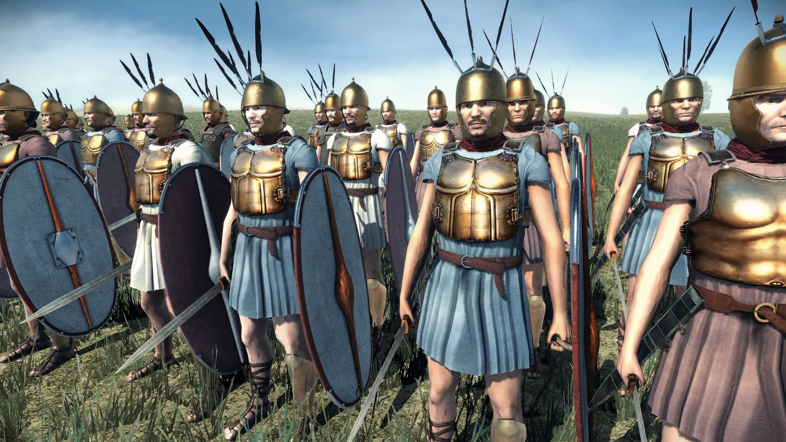
This is the famed equipment of the hastati everyone knows ever since booting up Rome Total War for the first time. There is not much to add to the equipment themselves, except which visual elements helped us determine the look. The “crown” of feathers on the helmet was for a long time interpreted as the feathers coming out of the knob of the Montefortino helmet, like a flower bouquet. From numerous depictions and also now the occasional findings, we can determine that this interpretation is wrong. Similar to what we already knew about the Samnite way of attaching feathers to their helmets, the Romans had a metal crest with three small tubes, which was attached to the knob. These held the feathers. Numerous depictions on Roman rams, Paestum wall paintings and a tablet of Entella dedicated to the Romans confirm that this construction must have been in place by the early 3rd century BC at least.
Images from: Francesco Galluccio: Gli Elmi di Tipo Montefortino con Decorazioni Apicali dal Mare di Sicilia (2023):
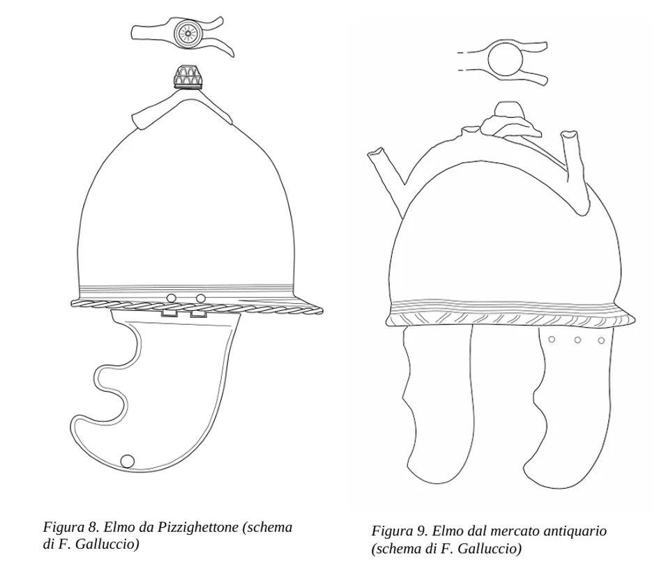
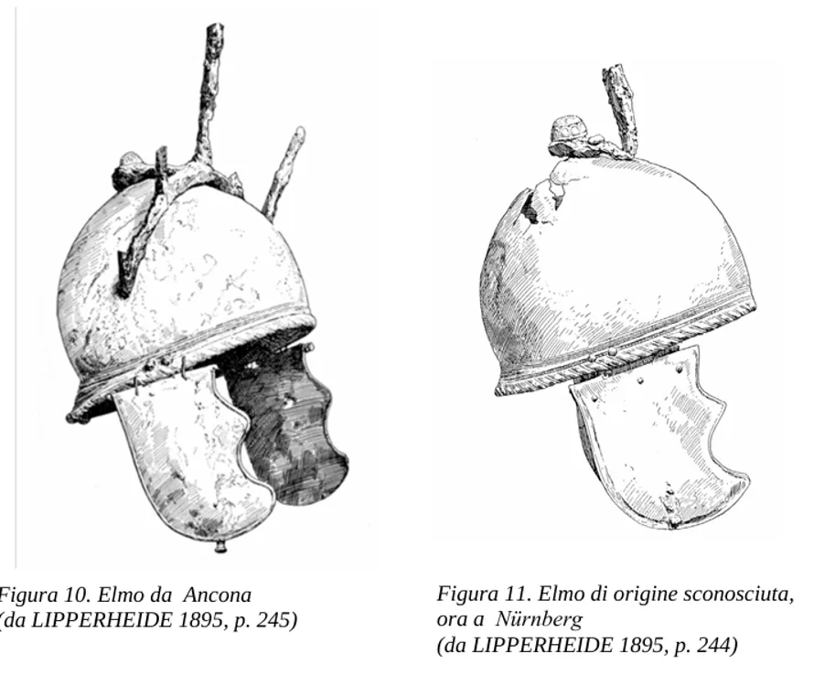
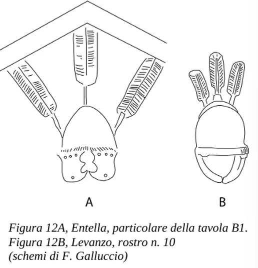
The *kardiophylax* is still a mystery to us. It is usually interpreted as a simple bronze sheet attached to the breast with leather straps. This is not necessarily wrong. Still, we went with the elaborate muscle-shaped *kardiophylakes* depicted on Campanian wall paintings and pottery. Though it may go a little bit beyond of what Polybios describes, it still remains the closest evidence from a visual point of view. The metal attachments offer more protection to the shoulders and sides than leather straps and make this whole construction into something moreso resembling a tube and yoke cuirass rather than just a flat and ineffective metals sheet protecting a very small area. Image: Campanian Wall painting from Nola, ca. 4th century BC
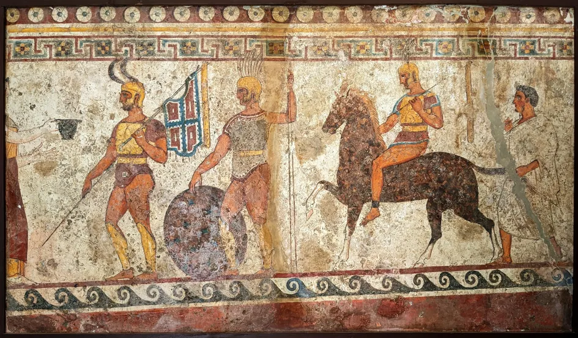
The “shin-guard” – *proknemis* – is in singular. This leads to the common interpretation of the Romans wearing only one greave and we adhered to that *communis opinio*. It is still somewhat debatable, on which leg this greave was worn or if *proknemis* may just refer to “leg protection” in a general sense and could still imply more than one, but since a decision had to be made, we went with the most common one, and attached one greave to the leading leg. The following section might be a bit surprising to some of you:
[15] but those who are rated above 10.000 drachmas wear instead of the breastplate [*καρδιοφύλακος / kardiophylakos*] a coat of chain-mail [*ἁλυσιδωτοὺς περιτίθενται θώρακας / alysidotous peritithentai thorakas*]. [16] The principes [*πρίγκιπας / prinkipas*] and triarii [*τριαρίους / triarious*] are armed in the same manner except that instead of the pila [*ὑσσῶν / hysson*] the triarii [*τριάριοι / triarioi*] carry spears [*δόρατα / dorata*].
This is all we get on those soldier types. Both are usually interpreted with just mail, probably because of Rome Total War as well, but Polybios is explicit that the equipment consisting of helmet, heart-protector, greave, sword and oblong shield is the basic one for all heavy infantry. Only those rated above 10.000 drachmae during the levy have to bring mail. Thus, our principes also partly wear the kardiophylakes - though we gave them some specially commissioned muscle cuirasses to harken back to time where they wore the “best arms” as described by Livy (see the last Dev Diary). By the time a soldier becomes a triarius, however, he probably amassed enough wealth to be permanently armed with mail and thus our triarii, the most elite Roman unit, is completely decked out in mail.
Principes:
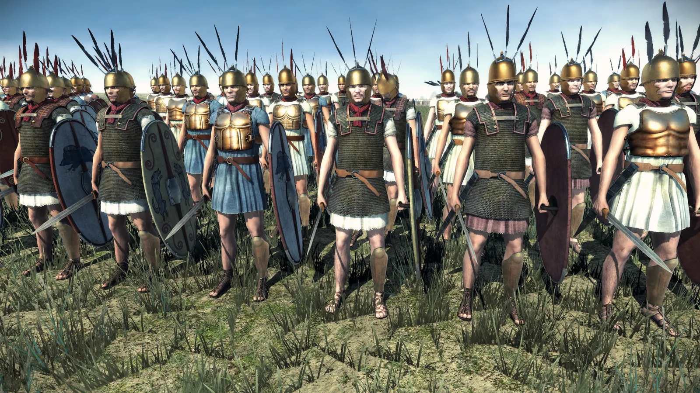
Triarii:
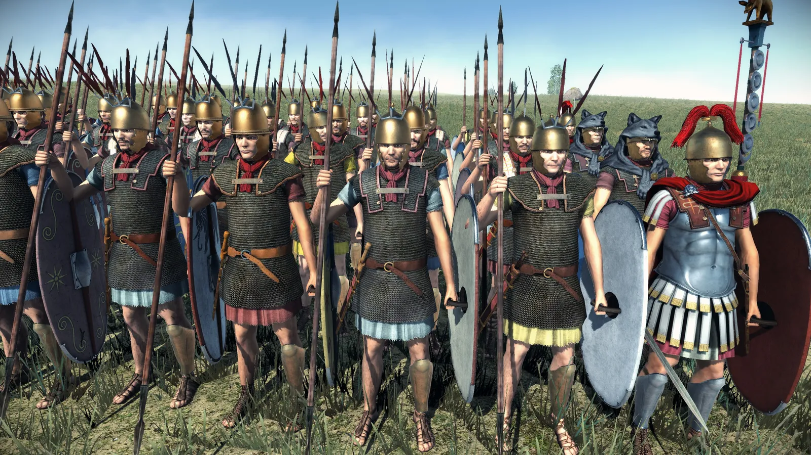
Now, we’ll look at the cavalry of the Romans at the time of Polybios: VI.25:
Similarly they divide the cavalry into ten squadrons [*ἴλας δέκα / ilas deka*], and from each they select three cavalry officers [*ἰλάρχας / ilarchas*], who each select a rearguard officer [*οὐραγούς / ouragous*]. The cavalry officer first elected commands the squadron, the other two have the rank of decuriones [*δεκαδάρχων / dekadarchon*]: a name indeed which applies to all alike. If the first cavalry officer is not on the field, the second takes command of the squadron. The armour of the cavalry is very like that in Greece. […] Wherefore, as experience showed them the uselessness of [their old arms], they lost no time in changing to the Greek fashion of arms: the advantages of which were, first, that men were able to deliver the first stroke of their lance-head with a good aim and effect, because the shaft from the nature of its construction was steady and not quivering; and, secondly, that they were able, by reversing the lance, to use the spike at the buttend for a steady and effective blow. And the same may be said about the Greek shields [*θυρεῶν / thureon*]: for, whether used to ward off a blow or to thrust against the enemy, they neither give nor bend. When the Romans learnt these facts about the Greek arms they were not long in copying them; for no nation has ever surpassed them in readiness to adopt new fashions from other people, and to imitate what they see is better in others than themselves.
I skipped the parts that were already included in the last Dev Diary on the early Roman equites. It is clear that the Roman cavalry changed into the appearance of cavalry common to the Mediterranean at the time: heavily armoured, with Greco-Roman equipment, a round shield with spine, like a thureos shield and strong lances.
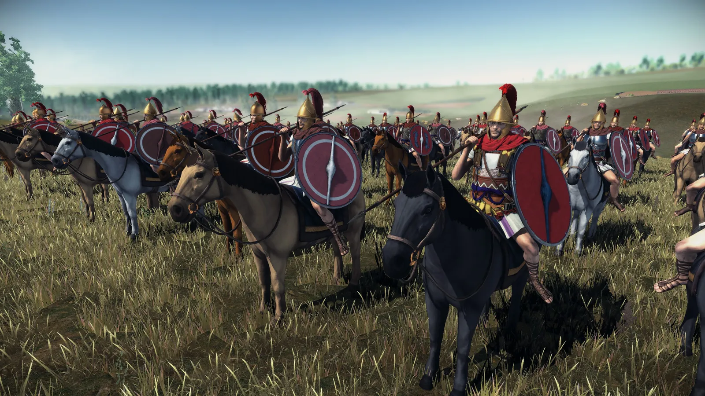
Last but not least, we shall take a peek at the allies of the Polybian Roman army. On those, our dear author says: VI.26
[5] The allies having now assembled also at the same places as the Romans, their organization and command are undertaken by the officers appointed by the consuls known as praefecti sociorum [*πραίφεκτοι / praiphektoi*] and twelve in number. [6] They first of all select for the consuls for the whole force of allies assembled the horsemen and footmen most fitted for actual service, these being known as the picked [*ἐπιλέκτους / epilektous*]. [7] The total number of allied infantry is usually equal to that of the Romans, while the cavalry are three times as many. [8] Of these they assign about a third of the cavalry and a fifth of the infantry to the picked corps; the rest they divide into two bodies, one known as the right wing and the other as the left.
The “picked” allies of the Romans, most commonly known as “extraordinarii”, make regular experiences in the narrative of Livy. We gave them a mixed equipment of other Italic units, but on par with the equipment of the Romans.
Socii cohort:
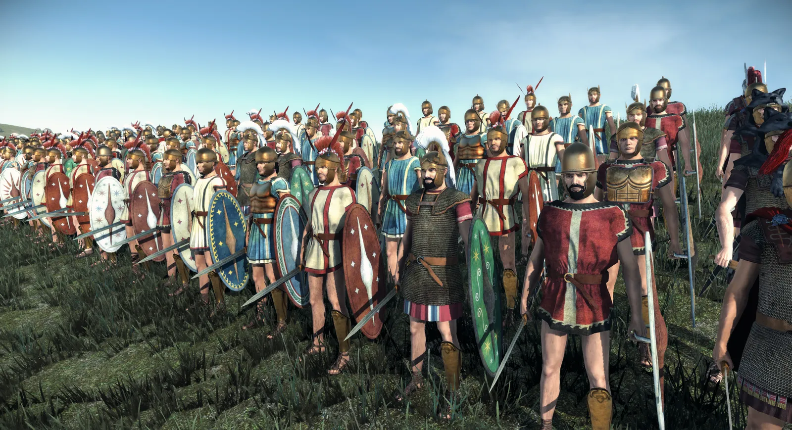
Socii Extraordinarii:
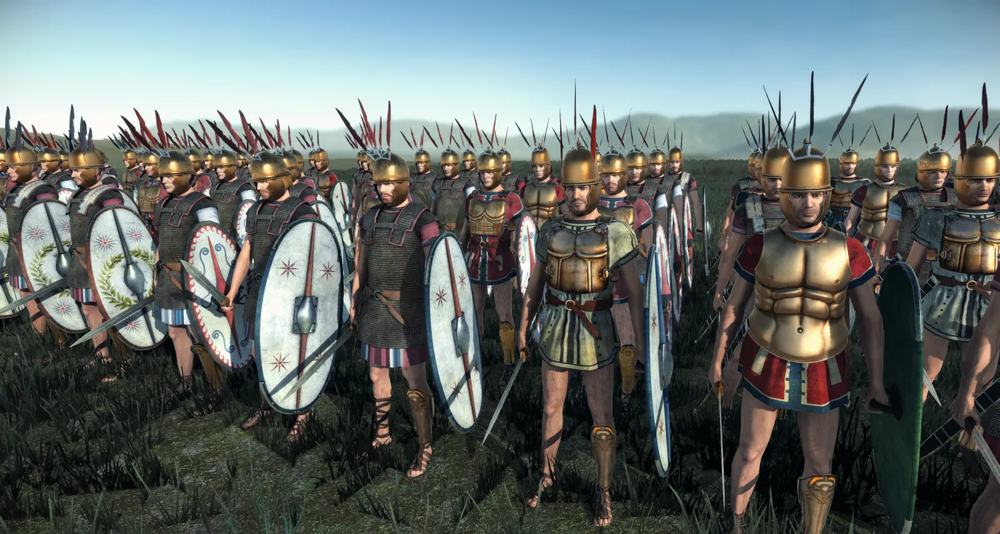
Extraordinarii Cavalry:
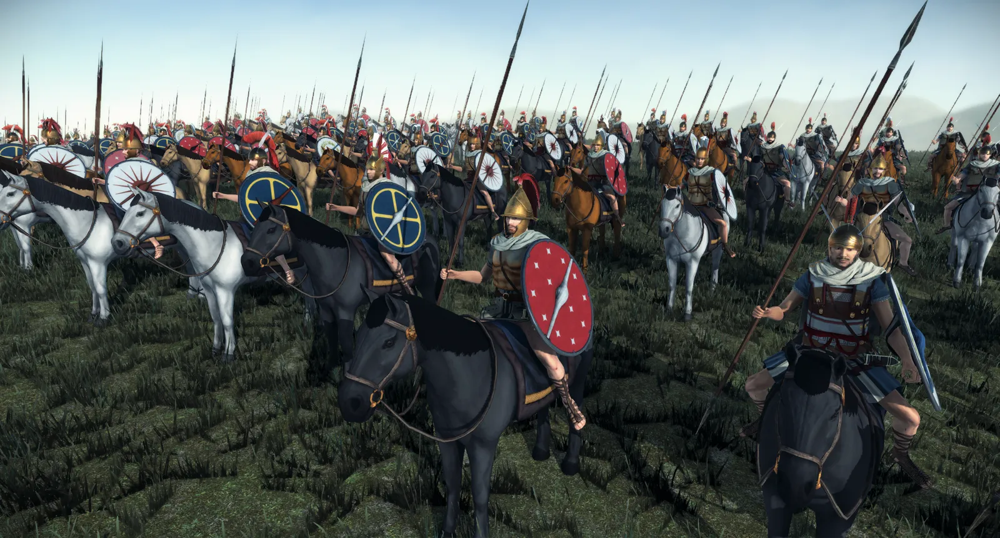
And now finally some action shots from the Historical Battle of Kynoskephalai 197 BC, where these units will appear on your side!
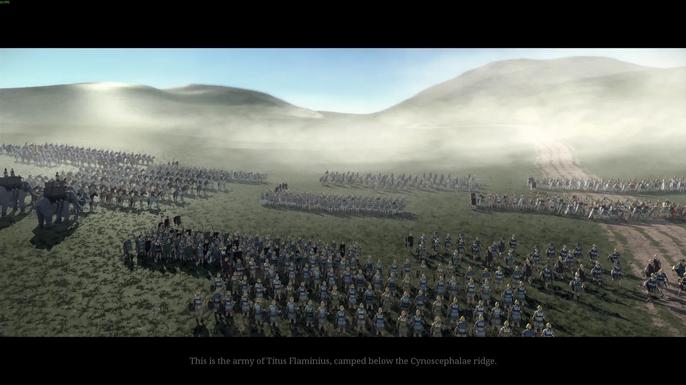
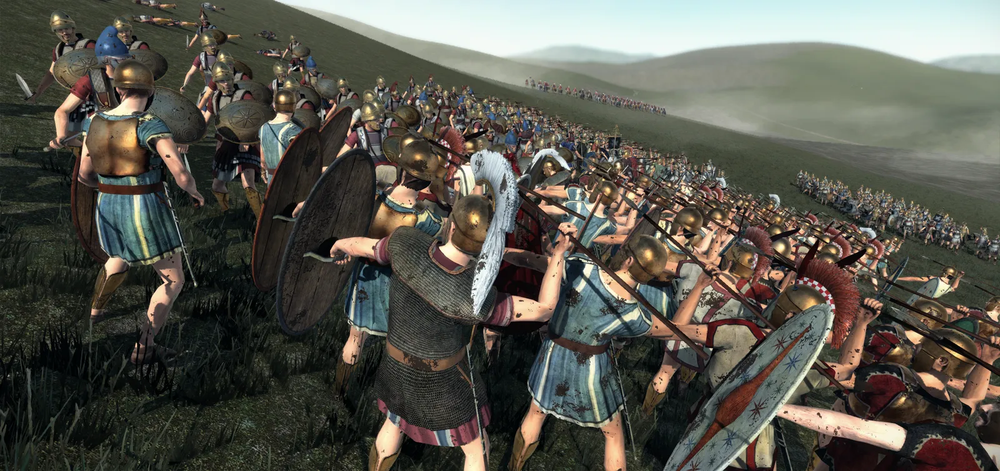
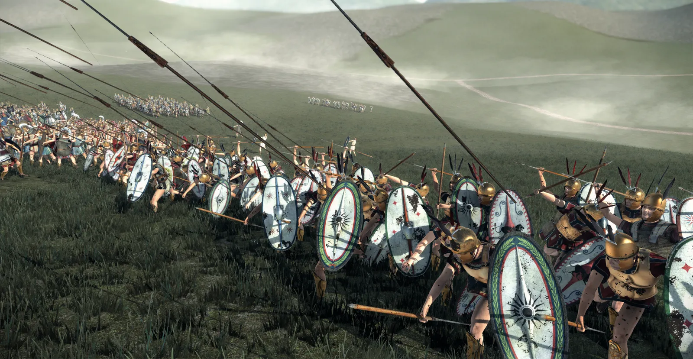
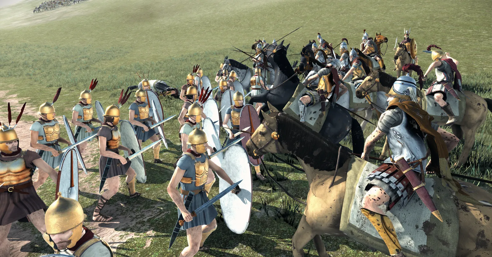
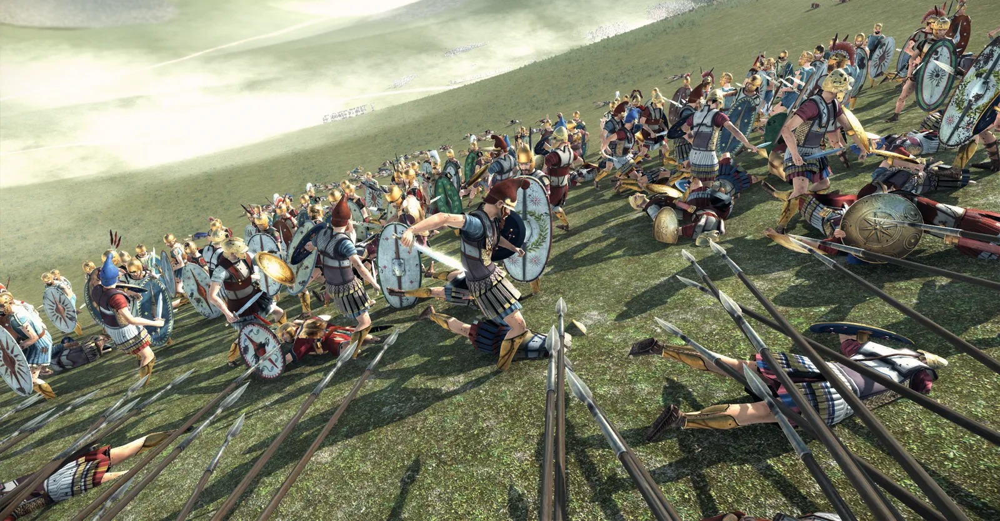
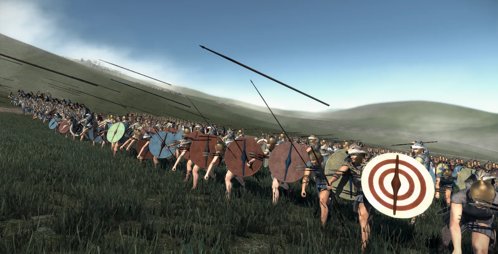
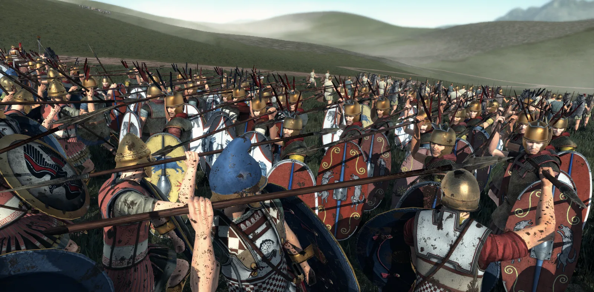
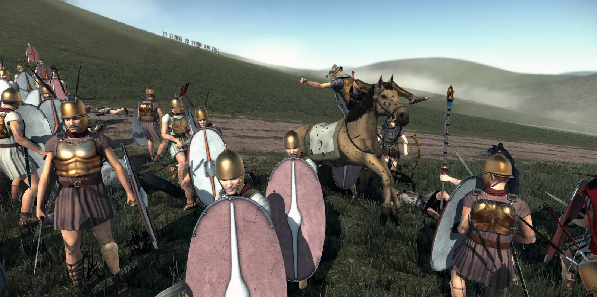
This concludes our Developer Diary for today! Discuss your thoughts and questions in a channel and see you next time!